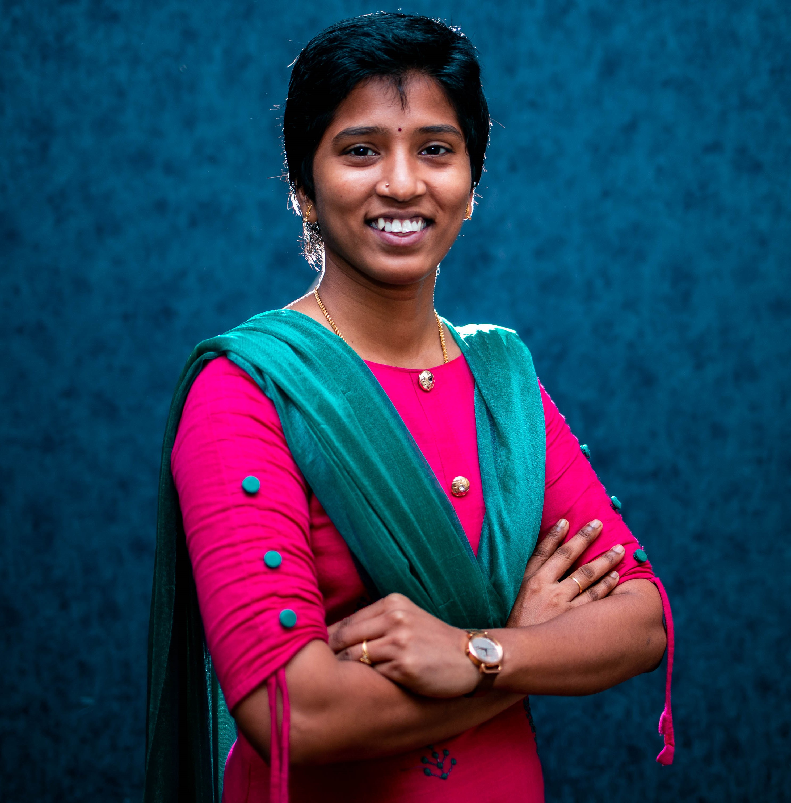

Gomathi M
Senior Ops Executive

Summary
As an educational worker, I have the great intention to work in society to develop the nation through my small contribution. I strongly believe that education is the weapon to bring revolutionary changes. My strength of capabilities in content development, training, teaching, theoretical and practical knowledge on education, and experiences will lead me as an efficient leader in the educational sector.
Work Experience
- Mar’23-Present: Senior Ops Executive at Freshworks STS Software Academy
- April’22- Nov’22: Support Trainer in GCC School Leadership& Development Program, Chrysalis, Chennai
- Dec’20 – April'22: Class Analyst at Whitehat Jr, Mumbai
- Aug’20 – Sep’20: Curriculum Designer at Mastree, Bangalore
- 2017 – 2018: Training and Development Associate in Bhumi (NGO), Chennai
- 2015 – 2017: Program cum Curriculum Associate in Avanti Fellows (NGO), Chennai
Workshops
- Collaborated with Report Bee to create Data Analysistracker.
- Statistics Research Data Analysis in R Commander, Azim PremjiUniversity.
- Subject owner to conduct workshop in schools about good touch and bad touch.
- Conducted Workshops for tribal community children.
Education
- MA Education – Azim Premji University, Bangalore, 2018-2020 with first-class honors.
- B.E Electrical and Electronics Engineering - Anna University, Chennai,2015 with first-class distinctions.
- 12th – Sri Surya Junior College, Nagari, 2011.
- 10th – Sri Sarvani Vidhya Nikethan, Nagari, 2009.